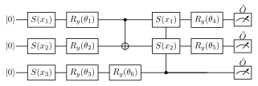
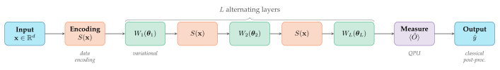
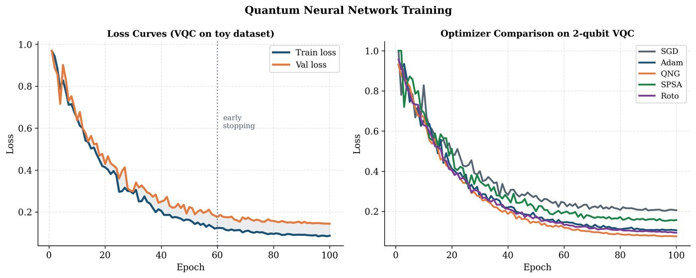

Chapter 10: Quantum Neural Networks¶
Quantum neural networks (QNNs) generalize deep learning to quantum hardware. The central idea is simple: replace the classical neural network’s layers of matrix multiplications and nonlinearities with layers of parameterized quantum gates. The resulting model is trained by minimizing a quantum expectation value using gradients computed via the parameter shift rule.
Learning Objectives
By the end of this chapter, you will be able to:
-
Design QNN architectures for classification and regression
-
Derive and apply the parameter shift rule
-
Implement quantum natural gradient (QNG) descent
-
Analyze the expressibility-trainability tradeoff in QNNs
-
Build a complete QNN training loop in PennyLane with PyTorch
10.1 QNN Architecture¶
A QNN maps data \(\mathbf{x}\in\mathbb{R}^d\) to predictions \(\hat{y}\in\mathbb{R}^K\):
The architecture:
where \(S(\mathbf{x})\) encodes the data and \(W_l(\boldsymbol{\theta}_l)\) are trainable unitary layers.


10.2 The Parameter Shift Rule¶
Theorem 10.1 (Parameter Shift Rule (Mitarai et al. 2018; Schuld et al. 2019))
For a parameterized gate \(U(\theta_i) = e^{-i\theta_i G_i/2}\) where \(G_i\) has eigenvalues \(\pm 1/2\), the gradient of any expectation value is:
This requires exactly 2 circuit evaluations per parameter and is exact (no finite-difference error).
Solved Example 10.1
Problem: Compute \(\partial\mathcal{C}/\partial\theta\) for \(\mathcal{C}(\theta) = \langle 0|R_y^\dagger(\theta)ZR_y(\theta)|0\rangle\).
Solution: \(R_y(\theta)|0\rangle = \cos(\theta/2)|0\rangle + \sin(\theta/2)|1\rangle\). \(\mathcal{C}(\theta) = \langle Z\rangle = \cos^2(\theta/2)-\sin^2(\theta/2) = \cos\theta\). True gradient: \(\partial\mathcal{C}/\partial\theta = -\sin\theta\).
Parameter shift check: \(\frac{1}{2}[\mathcal{C}(\theta+\pi/2)-\mathcal{C}(\theta-\pi/2)] = \frac{1}{2}[\cos(\theta+\pi/2)-\cos(\theta-\pi/2)] = \frac{1}{2}[-\sin\theta \cdot 2] = -\sin\theta\). ✓
Generalized PSR for gates with eigenvalues \(\pm r/2\):
10.3 Quantum Natural Gradient¶
Standard gradient descent uses Euclidean metric on parameter space. The Quantum Natural Gradient (QNG) (Stokes et al. 2020) uses the Fubini-Study metric (geometric structure of quantum state space):
where \(\mathbf{F}^+\) is the Moore-Penrose pseudoinverse of the QFIM (Eq. (3.9)).
For a parameterized state \(|\psi(\boldsymbol{\theta})\rangle\):
Solved Example 10.2
Problem: Apply one QNG update to \(|\psi(\theta)\rangle=R_y(\theta)|0\rangle\) with \(\hat{O}=Z\), \(\theta_0=1.0\), \(\eta=0.1\).
Solution: \(\mathcal{C}(\theta)=\cos\theta\), \(\nabla\mathcal{C}=-\sin\theta=-0.841\) at \(\theta=1.0\). QFIM (from Solved Example 3.3): \(F(\theta)=1\). QNG update: \(\theta_1 = 1.0 - 0.1\cdot(1)^{-1}\cdot(-0.841) = 1.0 + 0.084 = 1.084\). For single-parameter circuits, QNG \(\equiv\) GD. Advantage appears with multiple coupled parameters.
Block-diagonal approximation: Full QFIM requires \(O(p^2)\) computations. Approximation with blocks of size 2 (for each gate) reduces to \(O(p)\).
10.4 Loss Functions for QNNs¶
Binary classification: Hinge loss or cross-entropy on \(\langle Z_0\rangle\):
Regression: Mean squared error on expectation values:
Multi-class: Softmax over \(K\) observables: \(\hat{p}_k = \text{softmax}_k(\{\langle\hat{O}_j\rangle\}_{j=1}^K)\).
10.5 Expressibility vs. Trainability¶

Important
Fundamental tension: High expressibility requires deep circuits and global entanglement, which leads to barren plateaus (exponentially vanishing gradients). Low expressibility may miss the target function.
Design principle (Cerezo et al. 2021 (Cerezo et al. 2021)): Use local cost functions (few-body observables) and shallow circuits with layerwise training to avoid barren plateaus. See Chapter 16.
10.6 Complete QNN with PennyLane + PyTorch¶
import pennylane as qml
from pennylane import numpy as pnp
import numpy as np
import torch
import torch.nn as nn
from sklearn.datasets import make_moons
from sklearn.model_selection import train_test_split
from sklearn.preprocessing import StandardScaler
# -- QNN Device ----------------------------------------------
n_qubits = 4
n_layers = 3
dev = qml.device("default.qubit", wires=n_qubits)
@qml.qnode(dev, interface="torch", diff_method="parameter-shift")
def qnn_circuit(inputs, weights):
"""QNN circuit with data re-uploading."""
for l in range(n_layers):
# Data encoding (re-upload each layer)
qml.AngleEmbedding(inputs, wires=range(n_qubits), rotation='Y')
# Trainable rotation layer
qml.StronglyEntanglingLayers(weights[l:l+1], wires=range(n_qubits))
return qml.expval(qml.PauliZ(0))
# -- Hybrid Model ---------------------------------------------
weight_shapes = {"weights": (n_layers, n_qubits, 3)}
qlayer = qml.qnn.TorchLayer(qnn_circuit, weight_shapes)
model = nn.Sequential(
nn.Linear(2, n_qubits), # Classical pre-processing
nn.Tanh(),
qlayer, # Quantum layer
nn.Linear(1, 1), # Classical post-processing
nn.Sigmoid()
)
# -- Training -------------------------------------------------
X, y = make_moons(n_samples=100, noise=0.15, random_state=42)
X = StandardScaler().fit_transform(X)
X_train, X_test, y_train, y_test = train_test_split(X, y, test_size=0.3)
X_train_t = torch.tensor(X_train, dtype=torch.float32)
y_train_t = torch.tensor(y_train, dtype=torch.float32).unsqueeze(1)
X_test_t = torch.tensor(X_test, dtype=torch.float32)
optimizer = torch.optim.Adam(model.parameters(), lr=0.01)
loss_fn = nn.BCELoss()
print("Training Hybrid QNN...")
for epoch in range(50):
model.train()
optimizer.zero_grad()
preds = model(X_train_t)
loss = loss_fn(preds, y_train_t)
loss.backward()
optimizer.step()
if (epoch+1)
model.eval()
with torch.no_grad():
test_preds = model(X_test_t)
test_acc = ((test_preds>0.5).float().squeeze().numpy()
== y_test).mean()
print(f"Epoch {epoch+1:3d}: loss={loss.item():.4f}, test_acc={test_acc:.3f}")
# -- QNG Optimizer ---------------------------------------------
# PennyLane native QNG:
dev_qng = qml.device("default.qubit", wires=2)
@qml.qnode(dev_qng)
def simple_qnn(params, x):
qml.AngleEmbedding(x, wires=[0,1])
qml.RY(params[0], wires=0); qml.RY(params[1], wires=1)
qml.CNOT(wires=[0,1])
qml.RY(params[2], wires=0)
return qml.expval(qml.PauliZ(0))
params = pnp.array([0.1, 0.2, 0.3], requires_grad=True)
qng_opt = qml.QNGOptimizer(stepsize=0.1, lam=0.01, approx="block-diag")
x_sample = np.array([0.5, 0.8])
for step in range(5):
params, cost = qng_opt.step_and_cost(lambda p: simple_qnn(p, x_sample), params)
print(f"QNG step {step}: cost = {cost:.4f}")
10.7 Chapter Summary¶
Chapter Summary
-
QNN: Data encoding \(+\) parameterized ansatz \(+\) measurement. Output is expectation value \(\langle\hat{O}\rangle_{\psi(\mathbf{x},\boldsymbol{\theta})}\).
-
Parameter shift rule: Exact gradient in 2 circuit evaluations per parameter. Key formula: \(\partial_i\mathcal{C} = \frac{1}{2}[\mathcal{C}(\theta_i+\pi/2)-\mathcal{C}(\theta_i-\pi/2)]\).
-
Quantum Natural Gradient: Uses QFIM as metric. Converges faster than vanilla gradient descent. Block-diagonal approximation is practical.
-
Loss functions: BCE, MSE, or cross-entropy applied to expectation values. Multi-class via multiple observables.
-
Expressibility vs. trainability: Fundamental tension. Solution: local cost functions, shallow circuits, and layerwise training.
-
PennyLane-PyTorch:
qml.qnn.TorchLayerenables seamless hybrid classical-quantum models with backpropagation.
Exercises
Exercise . Apply the parameter shift rule to compute \(\partial\mathcal{C}/\partial\theta\) for \(\mathcal{C}(\theta) = \langle 0|R_x(\theta)^\dagger X R_x(\theta)|0\rangle\). Verify against the analytic derivative.
Exercise . Show that for a product-state circuit \(U=\bigotimes_i R_y(\theta_i)\) and global observable \(O=Z_0\cdots Z_{n-1}\), the gradient variance scales as \(O(4^{-n})\). (This is the barren plateau for global cost functions.)
Exercise . Derive the QNG update rule from the natural gradient in information geometry. Show that QNG is equivalent to gradient descent in the space of quantum states with respect to the Fubini-Study metric.
Exercise . Implement a QNN for 3-class classification on the Iris dataset. Use 4 qubits, 3 strongly entangling layers, and multi-class output via 3 observables. Report accuracy vs. classical MLP with same number of parameters.
Further Reading
-
Mitarai et al. (2018) (Mitarai et al. 2018) — quantum circuit learning, PSR
-
Schuld et al. (2019) (Schuld et al. 2019) — evaluating analytic gradients on quantum hardware
-
Stokes et al. (2020) (Stokes et al. 2020) — quantum natural gradient
-
Cerezo et al. (2021) (Cerezo et al. 2021) — cost function dependent barren plateaus